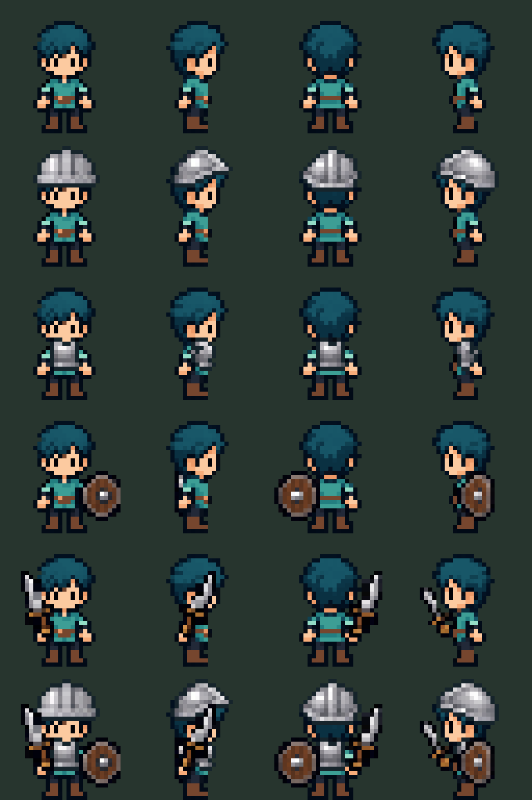

Máscara de metal y ajuste proporcional por pieza. Coraza sobre el torso y rostro despejado. Las capas son candidatas para prueba: faltan agarre de manos, oclusiones y animación de equipo.
Filas: base, casco, coraza, escudo, espada, combinación completa. Columnas: frente, derecha, espalda, izquierda.
